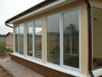
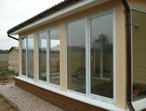

130x1405360 ₴*
200x1407310 ₴*
300x14011540 ₴*
170x2007920 ₴*


 

Откройте окно комфорта с самыми качественными пластиковыми окнами в Виннице!
Мечтаете ли вы о уюте в своем доме? Пластиковые окна – это ключ к обеспечению вашего жилья непревзойденной энергоэффективностью, высокой звукоизоляцией и надежностью. И теперь благодаря нам вы можете получить эти преимущества в Виннице!
Наша компания занимается изготовлением пластиковых окон, отвечающих самым высоким стандартам качества. Мы используем только самые современные материалы, гарантирующие долговечность и надежность наших окон. Наши мастера имеют многолетний опыт в этой области и прилагают максимум усилий, чтобы каждый элемент был изготовлен с заботой и мастерством.
Заказывая пластиковые окна у нас, вы получаете не только гарантированное качество, но и индивидуальный подход к вашему проекту. Мы работаем со всеми типами оконных конструкций, учитывая ваши личные требования и бюджет. Наши специалисты предоставляют консультации по выбору дизайна, цвета и функциональных возможностей, чтобы ваши пластиковые окна отвечали всем вашим потребностям.
Мы понимаем, что качество и сервис являются вашим приоритетом, поэтому мы предлагаем самое лучшее соотношение цены и качества. Наши конкурентные цены сделают процесс заказа пластиковых окон еще более привлекательным для вас.
Не ждите дольше! Откройте окно до комфорта, красоты и эргоэффективности с лучшими пластиковыми окнами в Виннице. Свяжитесь с нами уже сегодня, и мы с радостью поможем вам претворить ваши мечты в реальность!
Олена
"Спасибо! Очень довольны качеством окна. Гораздо лучше, чем было"
Ирина
"Просчитывала свой заказ у нескольких других производителей пластиковых окон. У вас оказалось самое дешевое."
Таня
"Заказала 2 небольших окошка на дачу. Удалось заказать за 12950грн. с монтажом и доставкой за город. Выглядят просто замечательно!"
Вадим
"Изготовили две сеточки на балкон. Сделали через неделю. Заказывал без монтажа, сам прикрутил. По качеству норм."
Изготовление заказа 7 - 10 рабочих дней в зависимости от загруженности
За дополнительную плату, ориентировочно 15грн./км
Бесплатное замер в Виннице. Но замер оплачивается клиентом на месте, учитываемом в оплату всего заказа. Выезд замерщика за город оплачивается заказчиком
Завод Veka(WHS) работает в Киевской области на немецком оборудовании и импортном ПВХ сырье.
Согласно ДБН(государственные строительные нормы) для винницкого региона, который соответствует 2 климатической зоне, рекомендуются 2 камерные стеклопакеты.
Цена доставки входит в стоимость услуги монтажа. Стоимость услуги монтажа составляет 15% стоимости металлопластиковых конструкций
Гарантийные обязательства касаются целостности конструкций при обычной эксплуатации без механических повреждений рамы или стеклопакета. WHS профиль – 2 года гарантии. Профиль VEKA – 5 лет гарантии.
Гарантийные условия изложены в договоре. Гарантия не распространяется на заказ без монтажа, качество проверяется при получении.
Офис "Окна-двери": Келецкая 61а, г. Винница, 21000
Google Maps: 49.2246, 28.4165


Просчитать окна по размерам?
(068) 379-79-74